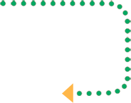
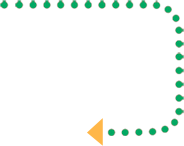
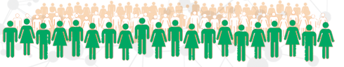
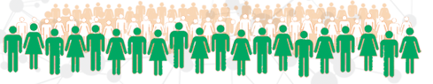

... Ce qui hier encore paraissait impossible, est aujourd’hui en passe de se réaliser. Le regard de notre société sur la maladie a changé, elle n’est plus perçue comme une fatalité, mais comme un défi à relever. Le défi ultime, c’est de gagner la bataille contre la maladie, de gagner la bataille pour la vie.


 

Plus de 88% du budget global du PNPCC, sur dix ans, est destiné à la prise en charge diagnostique et thérapeutique
Plus de 35 % du budget alloué à la prévention est destiné à la lutte contre le tabagisme, les 5 premières années
Chaque année, entre 2,5 et 3,5 millions de dirhams sont destinés à la lutte contre le tabagisme


En 2007, Sa Majesté le Roi Mohammed VI a proclamé le 22 novembre "Journée Nationale de Lutte contre le Cancer". Depuis, la célébration de cette journée nationale est un moment privilégié de débat et de réflexion, qui marque l’engagement indéfectible du Royaume dans la lutte contre le cancer.
Cette journée est également une occasion pour faire le bilan des différentes actions engagées par l’ensemble des intervenants concernés, de rappeler les objectifs stratégiques du Royaume dans le domaine de la lutte contre le cancer et d’en faire un sujet de débat public et national.
PRIX NATIONAL ET INTERNATIONAL DE LA FONDATION
Depuis 2007, le 22 novembre est enfin un rendez-vous pour célébrer et rendre hommages à celles et à ceux qui luttent au quotidien pour améliorer la prise en charge des patients ou qui s’investissent dans la recherche et l’accompagnement social.


Inspiré des meilleures pratiques au niveau international, ce programme vise à prévenir les cancers liés au tabac grâce à des actions pérennes d’information, de sensibilisation, d’éducation et d’aide au sevrage tabagique auprès de populations ciblées dans les établissements scolaires et les entreprises.

 

Adhèrent à ce programme, et organisent annuellement des actions de sensibilisation et d’information, encadrées par des médecins, des infirmiers et des experts en tabacologie spécialement formés par la Fondation Lalla Salma.


La Fondation Lalla Salma entame un travail pédagogique à travers des campagnes d’information et de sensibilisation génériques. Objectif : commencer à parler du cancer et inciter le grand public à s’informer sur la maladie et sur les voies de prévention et de traitement.

La Fondation Lalla Salma communique autour de l’importance du dépistage pour la prévention du cancer du sein.

Le lancement de la première campagne anti-tabac. Elle associe plusieurs grands noms du sport au Maroc. La Fondation poursuit également ses campagnes d’information et de prévention du cancer du sein.

Les campagnes de prévention du cancer du sein s’installent et deviennent régulières. Le message central reste le même : le dépistage précoce reste la meilleure protection contre le cancer du sein.

La Fondation choisit de communiquer sur un sujet de première importance : la nécessité d’adopter un mode de vie sain pour éviter les principales formes de cancer. Activité physique, alimentation, sevrage tabagique … les messages sont clairs et touchent une grande partie de l’opinion publique marocain.

La Fondation poursuit son action en faveur des femmes pour la prévention du cancer du sein à travers les campagnes « Moi, j’ai choisi la vie » et « Chaque femme est précieuse ». En parallèle, la Fondation poursuit également ses programmes et ses campagnes anti-tabac.

Après avoir sensibilisé le grand public aux dangers de la cigarette, la Fondation Lalla Salma passe à une étape supérieure et communique autour du tabagisme passif dont est victime l’entourage immédiat du fumeur.


 diagnostic
diagnostic
de référence de la santé reproductive,
répartis dans les principales régions du Royaume


Chaque région de plus ou moins trois millions d’habitants a besoin de son centre d’oncologie
Objectif : Faciliter l’accès aux soins dans les régions et éviter aux, populations locales le déplacement vers les CHU des grandes villes,
qui eux-mêmes doivent contenir une centre d’oncologie.

le service d’hématologie et oncologie pédiatrique de Rabat reçoit annuellement 450 nouveaux cas dont les deux tiers sont des cas de pathologies oncologiques.
Les cancers gynéco-mammaires représentent près
de 60% des cancers de la femme au Maroc
les pôles d'excellence


Soucieuse d’assurer aux patients démunis et sans couverture sociale un
accès total aux médicaments de chimiothérapie,
la Fondation a également mis en œuvre le programme « Accès aux
médicaments pour les patients à revenus modestes » (ACCES).
temoignage

La Fondation accompagne les patients et leurs familles pendant toute la durée de leur traitement et au delà. Soutien psychologique, assistance logistique et administrative, soins esthétiques, écoute …


La lutte contre le cancer ne peut être remportée sans
la formation et la formation continue des professionnels.
Former et motiver les professionnels est au cœur de la stratégie de la Fondation.
Permettre aux professionnels de rester à jour concernant les avancées de la recherche et de la prise en charge des différentes formes de cancer partout dans le monde
Décisives pour la réussite des différents programmes de sensibilisation, de diagnostic précoce, de prise en charge et d’accompagnement menés par la Fondation.


Lancement de l'analyse de la situation de la recherche en cancérologie au Maroc
a permis de dresser un état des lieux objectif et actualisé
L’institut de recherche sur le cancer
Lancement les travaux de construction de l’Institut de recherche sur le cancer au Centre hospitalier et universitaire de Fès

Centre académique d’excellence où les compétences et les expertises sont mutualisées au service de la recherche en cancérologie.
En collaboration avec :


Dans son action au quotidien, la Fondation Lalla Salma agit comme un facilitateur et un soutien aux différents institutions et établissements de soin, de recherche, de formation ou d'accompagnement.
La Fondation joue un rôle de catalyseur des actions des différents intervenants publics et privés afin d’optimiser les efforts des uns et des autres et de garantir un grand degré de convergence et de cohérence avec les objectifs et les mesures contenus dans le Plan national de prévention et de contrôle du cancer (PNPCC).
INSCRIRE LE MAROC DANS LA DYNAMIQUE MONDIALE DE RECHERCHE ET D’INNOVATION EN MATIÈRE DE LUTTE CONTRE LE CANCER


 


